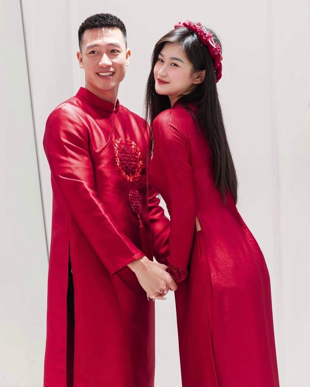
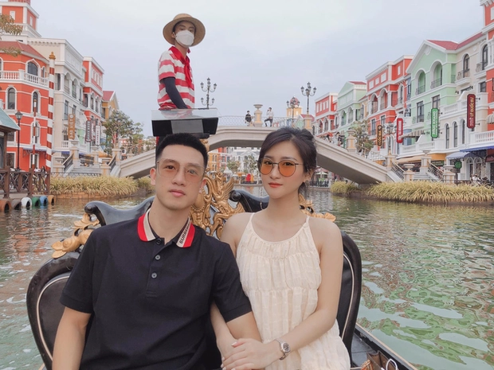

Những chuyện tình càng yêu lâu càng bền chặt của dàn cầu thủ
Hồng Nhung , 12:18 23/11/2022
12:18 23/11/2022
Nếu bạn đang cảm thấy mất niềm tin vào những tình yêu lâu năm mà không có kết thúc tốt đẹp, thì chuyện tình của dàn cầu thủ dưới đây sẽ khiến bạn phải suy nghĩ khác.


Huy Hùng - Thuỳ Dương về chung nhà sau 8 năm yêu nhau
Mới đây, đám cưới của cầu thủ Huy Hùng và bà xã Nguyễn Thuỳ Dương nhận được nhiều sự quan tâm của người hâm mộ. Bởi lẽ, trước khi về chung một nhà, cặp đôi đã có khoảng thời gian 8 năm hẹn hò đáng ngưỡng mộ.
Huy Hùng (sinh năm 1992) quê ở Đông Anh (Hà Nội) nhưng hiện đang thi đấu cho CLB SHB Đà Nẵng. Anh cũng là một trong những gương mặt khá quen thuộc ở V-League lẫn ĐTQG. Bà xã của anh sinh năm 1995, tốt nghiệp khoa Sân khấu trường Đại học Sân khấu - Điện ảnh Hà Nội. Thuỳ Dương sở hữu ngoại hình cuốn hút, từng tham gia diễn xuất trong một và bộ phim truyền hình. Ở thời điểm hiện tại, cô nàng đang tập trung vào việc kinh doanh riêng.
 Huy Hùng và bà xã Thuỳ DươngQuen nhau từ năm 2014, giống như nhiều cặp đôi khác, Huy Hùng và Thuỳ Dương cũng gặp không ít những sóng gió, thăng trầm. Tuy nhiên sau tất cả, cặp đôi vẫn lựa chọn tin tưởng và ở bên cạnh đối phương.
Có người yêu là cầu thủ nổi tiếng, Thuỳ Dương buộc phải chấp nhận những khoảng thời gian yêu xa. Khi nào có cơ hội gặp gỡ, cặp đôi lại cùng nhau đi du lịch cả trong và ngoài nước. Chưa kể, trong sự nghiệp của Huy Hùng luôn có một hậu phương vững chắc, nhiệt tình cổ vũ, động viên. Thậm chí, Thuỳ Dương cũng là người luôn lên tiếng bênh vực, đính chính khi Huy Hùng gặp những tin đồn không đáng có.
Và cái kết không thể đẹp hơn cho chuyện tình 8 năm này chính là một đám cưới hoành tráng vào ngày 4/12 vừa qua. Bước sang một trang mới của tình yêu, nhiều người gửi lời chúc phúc và mong cặp đôi sẽ mãi ngọt ngào như hiện tại.
Theo Forbes, trong mùa giải 2021-2022, Ronaldo đã kiếm được 115 triệu, trở thành vận động viên có thu nhập cao thứ 3 trên thế giới. CR7 cũng là cầu thủ có thu nhập từ ngoài bóng đá cao nhất thế giới với 60 triệu USD thu được từ những bản hợp đồng quảng cáo, đại sứ thương hiệu cực kỳ đắt giá.
 Bên nhau 8 năm trước, cặp đôi vẫn vô cùng mặn nồng, hạnh phúcDuy Mạnh - Quỳnh Anh: Chuyện tình từ yêu đến cưới đẹp như trong mơ
Chàng là cầu thủ nổi tiếng, nàng là ái nữ của cựu Chủ tịch CLB Sài Gòn, Duy Mạnh - Quỳnh Anh luôn là hình mẫu cặp đôi mà nhiều người hướng đến. Không chỉ đơn giản được ngưỡng mộ vì thời gian yêu nhau dài lâu, mà sự chân thành, thấu hiểu hiếm cặp đôi nào có được giữa hai người là điều khiến người hâm mộ thích thú..
Trước khi kết hôn, Duy Mạnh và Quỳnh Anh có 4 năm hẹn hò. Từ lúc nam cầu thủ chưa nổi tiếng cho đến khi được chú ý nhiều hơn, anh vẫn luôn đăng tải những hình ảnh hạnh phúc bên Quỳnh Anh trên mạng xã hội. Cả hai luôn dành cho nhau những lời yêu thương, cử chỉ ngọt ngào khiến người hâm mộ "phát hờn".


Tính đến hiện tại, cặp đôi đã bên nhau 6 năm từ yêu đến cưới và có một nhóc tỳ đáng yêu. Thời gian không phải thi đấu, Duy Mạnh dành trọn cho gia đình. Anh cũng thường xuyên tặng bà xã những món quà đắt tiền vào dịp đặc biệt. Ngược lại, Quỳnh Anh chưa từng bỏ lỡ một trận đấu nào của ông xã, cô luôn xuất hiện trên khán đài để cổ vũ.
Từng có thời gian cặp đôi vướng tin đồn rạn nứt, song cả hai vẫn chứng minh cuộc sống hôn nhân hạnh phúc với người hâm mộ. Chuyện tình cảm của Duy Mạnh và Quỳnh Anh được fan gọi là truyện cổ tích vì vừa xứng đôi, vừa nhiều sự thú vị.